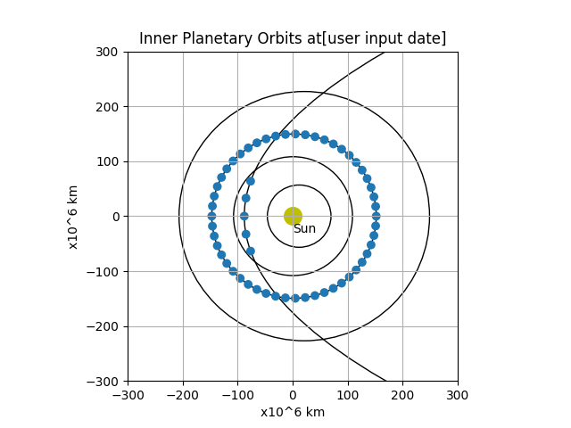

Note
Click here to download the full example code
Drawing a planet orbit as a function of time
The Wikipedia article describes a method step by step how to calculate the position (in heliocentric polar coordinates) as a function of time. The equations contain Newton’s gravitational constant and the mass of the Sun. Some of them are only solveable by numeric methods.

Out:
57.9
56.66392150213397
108.2
108.197735650983
149.6
149.57910950396783
227.89999999999998
226.911811063241
22994.0
2009.7761069332971
31536000
18 # Libraries
19 import matplotlib.pyplot as plt
20
21 from matplotlib.patches import Ellipse, Circle
22
23
24 # Implementing ellipse equations to generate the values needed to plot an ellipse
25 # Using only the planet's min (m) and max (M) distances from the sun
26 # Equations return '2a' (the ellipses width) and '2b' (the ellipses height)
27 def OrbitLength(M, m):
28 a = (M + m) / 2
29 c = a - m
30 e = c / a
31 b = a * (1 - e ** 2) ** 0.5
32 print(a)
33 print(b)
34 return 2 * a, 2 * b
35
36
37 # This function uses the returned 2a and 2b for the ellipse function's variables
38 # Also generating the orbit offset (putting the sun at a focal point) using M and m
39 def PlanetOrbit(Name, M, m):
40 w, h = OrbitLength(M, m)
41 Xoffset = ((M + m) / 2) - m
42 Name = Ellipse(xy=((Xoffset), 0), width=w, height=h, angle=0, linewidth=1, fill=False)
43 ax.add_artist(Name)
44
45
46 from math import *
47
48 EPSILON = 1e-12
49
50
51 def solve_bisection(fn, xmin, xmax, epsilon=EPSILON):
52 while True:
53 xmid = (xmin + xmax) * 0.5
54 if (xmax - xmin < epsilon):
55 return xmid
56 fn_mid = fn(xmid)
57 fn_min = fn(xmin)
58 if fn_min * fn_mid < 0:
59 xmax = xmid
60 else:
61 xmin = xmid
62
63
64 '''
65 Found something similar at this gamedev question:
66 https://gamedev.stackexchange.com/questions/11116/kepler-orbit-get-position-on-the-orbit-over-time?newreg=e895c2a71651407d8e18915c38024d50
67
68 Equations taken from:
69 https://en.wikipedia.org/wiki/Kepler%27s_laws_of_planetary_motion#Position_as_a_function_of_time
70 '''
71
72
73 def SolveOrbit(rmax, rmin, t):
74 # calculation precision
75 epsilon = EPSILON
76 # mass of the sun [kg]
77 Msun = 1.9891e30
78 # Newton's gravitational constant [N*m**2/kg**2]
79 G = 6.6740831e-11
80 # standard gravitational parameter
81 mu = G * Msun
82 # eccentricity
83 eps = (rmax - rmin) / (rmax + rmin)
84 # semi-latus rectum
85 p = rmin * (1 + eps)
86 # semi/half major axis
87 a = p / (1 - eps ** 2)
88 # period
89 P = sqrt(a ** 3 / mu)
90 # mean anomaly
91 M = (t / P) % (2 * pi)
92
93 # eccentric anomaly
94 def fn_E(E):
95 return M - (E - eps * sin(E))
96
97 E = solve_bisection(fn_E, 0, 2 * pi)
98 # true anomaly
99 # TODO: what if E == pi?
100 theta = 2 * atan(sqrt((((1 + eps) * tan(E / 2) ** 2) / (1 - eps))))
101 # if we are at the second half of the orbit
102 if (E > pi):
103 theta = 2 * pi - theta
104 # heliocentric distance
105 r = a * (1 - eps * cos(E))
106 return theta, r
107
108
109 def DrawPlanet(name, rmax, rmin, t):
110 SCALE = 1e9
111 theta, r = SolveOrbit(rmax * SCALE, rmin * SCALE, t)
112 x = -r * cos(theta) / SCALE
113 y = r * sin(theta) / SCALE
114 planet = Circle((x, y), 8)
115 ax.add_artist(planet)
116
117
118 # -------------------------------------
119 # Display
120 # -------------------------------------
121 # Create figure. Set axes aspect to equal as orbits are
122 # almost circular; hence square is needed
123 ax = plt.figure(0).add_subplot(111, aspect='equal')
124
125 # Axis configuration
126 plt.title('Inner Planetary Orbits at[user input date]')
127 plt.ylabel('x10^6 km')
128 plt.xlabel('x10^6 km')
129 ax.set_xlim(-300, 300)
130 ax.set_ylim(-300, 300)
131 plt.grid()
132
133 # Creating the point to represent the sun at the origin (not to scale),
134 ax.scatter(0, 0, s=200, color='y')
135 plt.annotate('Sun', xy=(0, -30))
136
137 # These are the arguments taken from hyperphysics.phy-astr.gsu.edu/hbase/solar/soldata2.html
138 # They are the planet names, max and min distances, and their longitudinal angle
139 # Also included is Halley's Comet, used to show different scale and eccentricity
140 PlanetOrbit('Mercury', 69.8, 46.0)
141 PlanetOrbit('Venus', 108.9, 107.5)
142 PlanetOrbit('Earth', 152.1, 147.1)
143 PlanetOrbit('Mars', 249.1, 206.7)
144 PlanetOrbit("Halley's Comet", 45900, 88)
145 for i in range(0, 52):
146 DrawPlanet('Earth', 152.1, 147.1, i / 52 * 365.25 * 60 * 60 * 24)
147 for i in range(-2, 3):
148 DrawPlanet("Halley's Comet", 45900, 88, 7 * i * 60 * 60 * 24)
149 print(60 * 60 * 24 * 365)
150
151 plt.show()
Total running time of the script: ( 0 minutes 0.113 seconds)